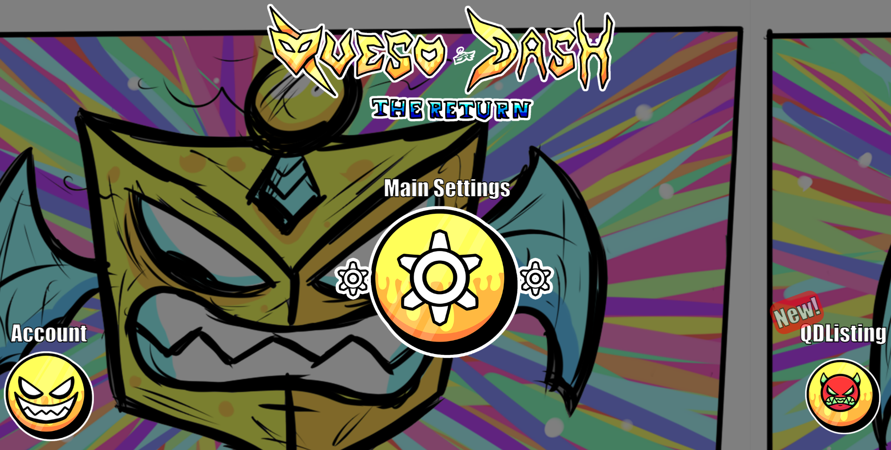

QDPage
Pagina personalizada y tematizada en Queso Dash
Introducing CrisKop, is a 16 year old boy who likes programming, rythm games, and much more.
Since like i had nine years i started liking some things related to software, two years later, i started coding my first program, having me now with a lot of knowledge since then
GO DOWN

Pagina personalizada y tematizada en Queso Dash
Brillo Dorado – Cap. 1
Interferencia – Cap. 2
Sin señal – Cap. 3
Vuelta al aire – Cap. 4
Cascada – Cap. 5
Prediciendo Luz – Cap. 6
Agüita pa’ despertar – Cap. 7
“Te amo”, comienza la historia que en mi cabeza estuve imaginando por mucho tiempo, vi algo brillante estar en mi entorno, algo deslumbraba mis ojos para donde quiera que mire, volteo y sigo viendo su reflejo, no sé si mi mente se quedó con su manera de brillar o es que la estoy viendo a ella.
“Te amo”, ese color, esa esencia, ese brillo, lo empiezo a amar, a recordar y a ver a través de él algo muy hermoso, algo que siento que me va a faltar ver después.
“Te amo”, estoy convencido de amar esa vista, verla hace que mi corazón insista, caer otra vez en amor hace pensar a mi mente, no sé si de nuevo mi corazón resista esa mirada resplandeciente, siento que ya está lista toda la verdad sobre lo que siento al recibir ese brillo, muchas veces analizo y puede parecer sencillo, pero no lo es, son emociones combinadas contenidas, revoluciones de mariposas dando vueltas sobre mí, estrellas en este cielo que miro, que recuerdo, que admiro,
que espero, que respiro y que hasta eso último me hace pensar en ella.
“¿Te amo?”, amo todo lo que he visto, poco he actuado, solo pienso en eso, pero no hago nada, talvez espere una oportunidad, aunque esto ya me ha salido mal antes.
A mi mente llegan recuerdos, recuerdos un poco traumáticos, me quitan la motivación para demostrar todo esto que siento, que pienso y hacerle notar lo mucho que me convenzo que le amo, capítulos llegan a mis recuerdos, pasado llega a mis encuentros, lloros llegan a mis pasatiempos, pero me debo contener, siento miedo de que vuelva a pasar lo mismo, aunque confío en todo lo que sé, sería un drama el no verme en esa meta que tan objetivamente observo.
Hace un buen tiempo, recuerdo rosas, felicidad pasando por ese lugar, ese recuerdo vuelve, y me llena la mente de ideas que podrían haber solucionado mi ansiedad en este momento si hubiera estado allá al estar acá ahora mismo.
Pensando un poco en que hacer, mirando ese bonito atardecer, vi de nuevo ese brillo, ORO, se me vino a la mente, una joya que quisiera cuidar, una linda que quisiera amar, algo que quisiera que fuera real, pero solamente hice un saludo. Lloro por dentro, me siento como cuando estoy en el centro de una decepción sin final, me pongo nervioso, pero no se me nota, ni yo lo noto, pero posteriormente me doy cuenta que si fui y no me gusta, aunque en ese momento me gustó eso que hice que luego no me convencía.
Esa bella reina siempre junto a su princesa, su flamante y literalmente brillante mujer, pienso en un obstáculo relacionado para poder describirlo, una valla en un establo, una puerta en un castillo, un gato enjaulado en una especie de historia de fantasía feliz, una rana yendo a la velocidad de la luz en una rueda infinita, aunque mi otra sección, piensa en el contraste de la idea que lo obstaculiza, un atajo para llegar al destino, una llama azul que solo me ayuda en ese objetivo, una luz en un pasillo oscuro. Lo triste es que no lo puedo confirmar, mi mente sigue en un pensar infinito que no describe con exactitud lo que se supone que pienso.
¿Puedo complementarme con esa princesa para llegar a la reina? No lo veo muy inteligente, pero parece que fueran imanes, no hay manera de ver oportunidad en donde las dos, no perciban lo que solo una debe llegar a ver. Un poco de pena, vergüenza sobre esto, no, ya me pasó antes y aseguro que no es así.
Dice mi mente que repetir algo que salió mal puede salir mal, pero si cambio las cosas a un ochenta por ciento de lo que me salió mal antes sé que saldrá bien.
Vuelvo a mi mundo, vuelvo a mi rutina, el tiempo ha pasado más rápido desde que me desprendí de ella, el tiempo me ha cegado, especialmente por esa vez no estar enfocado, mi vista vio su brillo desde casi el inicio de mi cambio en mi pensamiento, había observado los efectos que esa joya causó en mí, y lo ignoré, hice otras cosas y siento que no valieron la pena.
Desde el inicio convencido que mi otra meta iba a ser lograda y no fue así, me interpuso pensamientos de nuevo, un frío que se reinicia en mi contra, todo eso complementado de que, de hecho, había empezado a llover.
Un girasol que veo girando desde hace mucho tiempo, sigue girando cuando no lo veo, yo giraba para verlo y ahora ese girasol no lo volví a ver girar, mirada perdida, callejón sin salida, y volví a ese lugar. Ese miedo tan escandaloso de no reiterar la observación de un lindo paisaje, aunque sea una flor la que determina el linaje de todo mi pensamiento, un cielo pintado un poco borroso, o eso percibo desde que el paisaje no lo acompaña, falta de motivación causada por decepción de hechos anteriores y actuales que me llevan a esta angustia a lo mejor un poco exagerada pero que tiene razón de ser.
Una vez me dijeron que nunca me rinda, nunca lo hice, pero no busqué alternativas para eso, dando lo máximo di lo mínimo por el límite que sin sentido alguno coloqué en mi red lógica. Empezando no hay alternativas, pero no se ha repasado el primer paso, aunque al final de todo, esto es una alternativa completa, y esa alternativa ahora es mi camino principal y destino por llegar.
“Te amo”, de nuevo lo repito, esta vez en negrilla de mi voz alzada, mi mente lo confirma, pero mi cuerpo no lo transmite, sigo sin progresar
demasiado, sigo en un paso negativo en el orden, solo miro, y siento que no progreso, aseguro que esto es una alternativa, pero ni siquiera la estoy tomando, solo estoy asegurando haberla tomado.
Esto tiene similitud a una distracción más que a otro camino, pero la motivación que el camino principal se llevó, me hace afirmar eso, voy poco a poco avanzando sin progreso alguno.
Tomar de la mano pensamientos y ese pensamiento específico, mi alternativa a la tristeza, es efectivo solo y solo si los tomo al final de todo, no solo si admiro el buen resultado que puede llegar a tener, y solo eso. La alternativa que mis ojos vieron no se siente tan confiable para mi corazón, este derramó una gran cantidad hacia el camino principal, ese del cual no encuentro salida, está desmotivado, no sabe qué hacer y se tienta al ver esa joya, de comprarla recogiendo lo que ya derramó anteriormente. Mi mente y mi vista sienten lo mismo, debería tomarlo, pero mi corazón me lo impide.
Ese frío compuesto ahora es hielo, así de comprimido me siento en este valle de nieve, pero sin abrigo, nada para cubrirme, todo a la
deriva, sin tomar iniciativa de salir en el contraste de la única puerta, me auto decepciono por verme sin pensamiento alguno, sin salida de esta oscuridad que me tiene inmerso en un mar lleno de desgracias y tristezas.
Empiezo a quitar esa nieve, planificando acciones, observando aviones y pensando como escapar, sin embargo, sigo inmerso en ese camino sin salida, o eso parece por su tremenda dificultad, debo esforzarme más.
Comienza la montaña rusa la cual me esperaba que iniciara después, cambio bipolar repentino que nubla mi vista, la deja lista para caer mucho más en ese agujero que ni yo conozco el destino que tiene. Rueda de la fortuna sin rotación en la cual estoy encerrado en la zona superior, aunque, sigo sin verlo, está demasiado nublado.
Empiezo a quedarme dormido, cegado por una granada, silenciado por un altavoz, inmóvil por fuerza divina, moviéndome por la neblina, pero sin realmente moverme fuera de ella, hay viento muy fuerte impidiendo mi paso, empujando más fuerte empiezo a avanzar,
depende de mi mente que tanto avanzo, en esta nube que no muestra la verdad.